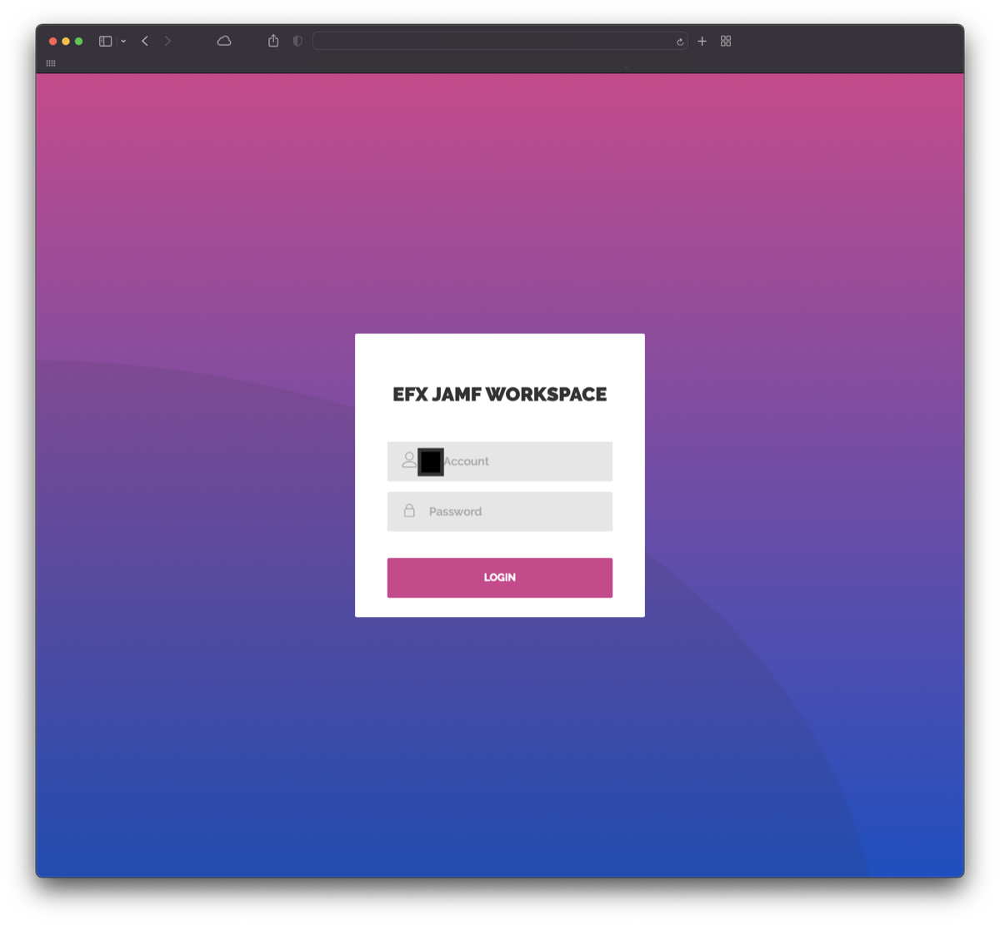
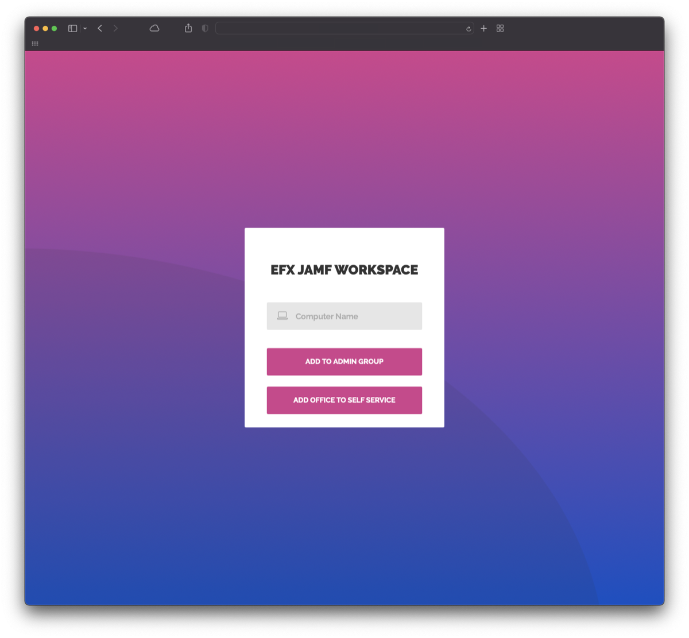
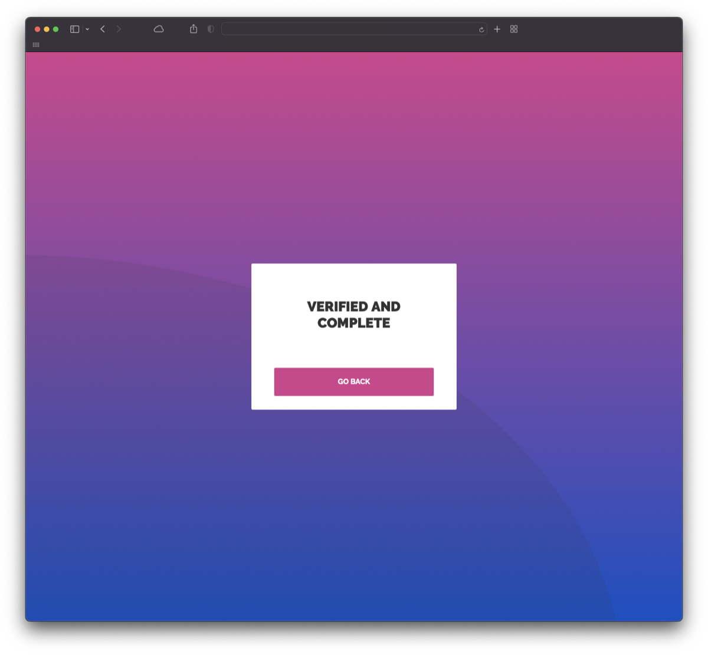

Justin Reeves
Justin ReevesJamf API Workspace
A locked-down web app that let technicians run specific Jamf Pro actions without access to the full console.
PHPJamf Pro APISession security
The problem
At Equifax we had a technician permissions problem. We wanted technicians to handle specific tasks in Jamf Pro without giving them access to the Jamf Pro console itself.
What I built
I built a PHP site that could perform only the actions we wanted technicians to have. Here’s how it works:
- The technician signs in with admin credentials. The site verifies them before continuing and shows an error if they fail.
- They enter a computer name.
- They choose the action they want to run on that computer.
- An API call finds the computer in Jamf Pro and adds it to the right group so the action runs.
- The technician is signed out automatically and the session ends, so they sign in again every time.



Some details are hidden for company security.